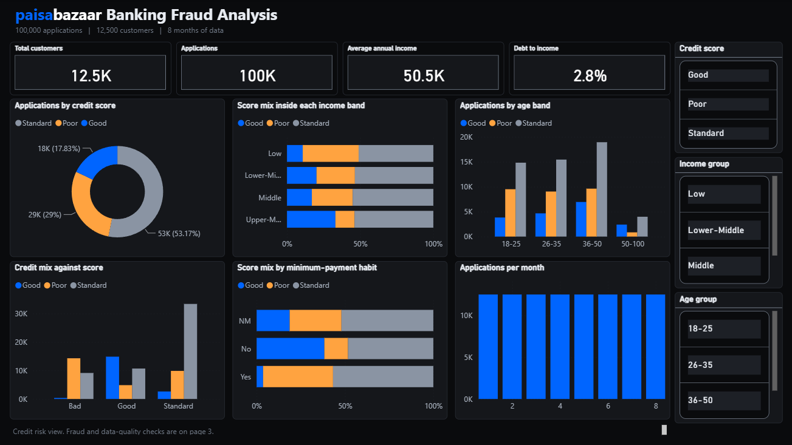

Page 1 of the Power BI report — book overview click to enlarge
Python · SQL · Power BI
Credit Risk & Identity Fraud Analysis
A credit-bureau export from Paisabazaar, arriving as messy as real bureau exports do. The question was simple: what actually separates a Good credit score from a Poor one — and how much of this data can be trusted at all?
The finding
Outstanding debt is the strongest divider — Poor customers carry 2.6× the debt of Good customers. Credit utilisation, the metric almost everyone expects to matter, is flat across all three classes (r = +0.046).
- Cleaned five distinct defects before trusting anything: age recorded under 18 in 5,868 rows, credit history longer than the customer has been alive in 11,824 rows, and 6,261 unparsed loan-type strings.
- Kept 22,929 flagged outlier rows (22.9%) instead of deleting them — every flag sat on the high side, which is the long tail of debt, not a data-entry error. Removing them would have deleted the customers a risk team cares about most.
- Ran an identity-fraud check on Name + SSN: 1,829 names (18.1%) hold between two and six SSNs, covering 33,608 rows of the book.
- Shipped a 3-page Power BI report with 32 visuals — book overview, score drivers, and risk segments — so the whole finding reads on one screen.